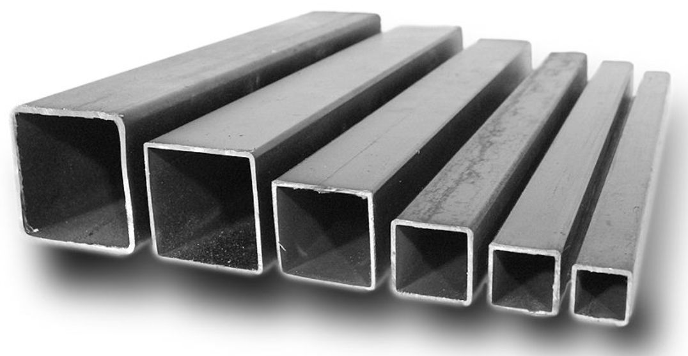

Трубы профильные
ГОСТ 30245-2003 — это гост который распространяется на профили гнутые замкнутые стальные квадратного и прямоугольного сечения. Согласно ему длина трубы может быть немерной, кратно мерной, мерной от 6 до 12 метров, а так же по согласованию с заводом от 4 до 13 метров.
Размеры трубы квадратной согласно ГОСТ 40х40, 50х50, 60х60, 70х70, 80х80, 90х90, 100х100, 120х120, 140х140, 150х150, 160х160, 180х180, 200х200, 250х250, 300х300 мм.
Размеры трубы прямоугольной согласно ГОСТ 50х25, 50х30, 50х40, 60х30, 60х40, 70х50, 80х40, 80х60, 80х70, 90х50, 90х60, 100х40, 100х50, 100х60, 120х40, 120х60, 120х80, 140х60, 140х100, 140х120, 150х100, 160х40, 160х80, 160х100, 160х120, 160х140, 180х60, 180х80, 180х100, 180х140, 200х40/80/100/120/160, 220х100/140, 240х120/160, 250х150, 260х130, 300х100/200, 320х180, 350х250/300, 380х220, 400х200.
Изготавливаются данные профили из листового рулонного проката из сталей углеродистых общего назначения, качественных и низколегированных. Стальные профильные трубы согласно госту должны быть обрезаны под прямым углом, повреждения закаты, трещины и риски глубокие не допустимы. Непровары не должны превышать 20 мм. Профили труб упаковываются в пачки, которые плотно уложены и обвязаны через каждые 2 — 3 метра. Гарантийный срок хранения трубы профильной составляет 24 месяца с момента отгрузки с завода производителя.
